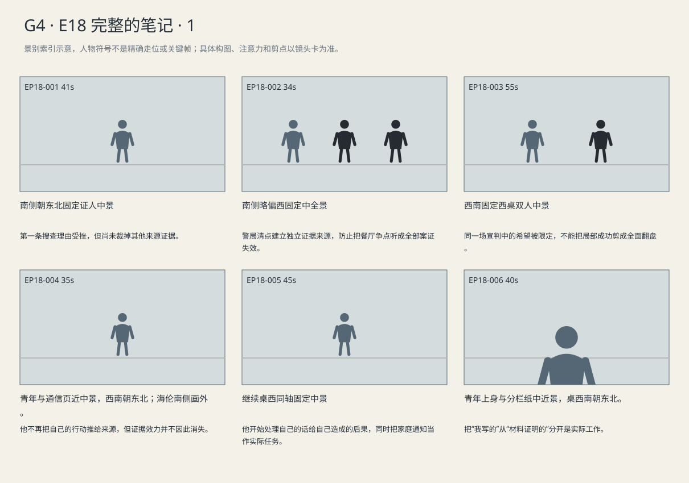
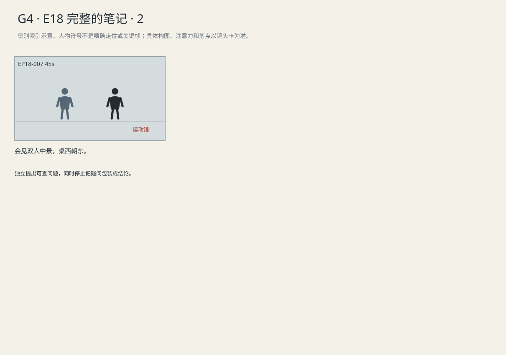

现场搜查与独立清点被分开，部分排证不排掉核心证物；完整通信又使青年承认自己的行为与推断早于来源支持。
剧本Markdown · 全部独立复制稿 · 英语字幕 · 中文字幕
详细剧本
E17-SC01 · 日·案发近一年后·听证上午 · COURT-STATE
州法庭西侧辩方桌上，两张空白清单并排。海伦坐南手边，路易吉在她北侧；东面的检察官正在翻证物登记。警员坐在东北证人位。证人台上已有餐厅执法记录画面的另一份副本。海伦在西桌翻到相同页，手指停在已移远的包与受控青年之间；警员将自己面前那份拉正。
海伦（使用英语，把证人的回答限定在当时的位置）：You'd moved the bag away. He was cuffed. Could he reach it while you were holding him?
中文对照：你已经把包挪开，他也戴着铐。你控制着他，他还能碰到包吗？
警员A（使用英语，据实短答）：No.
中文对照：不能。
证人把自己的照片往回推了一点，海伦没有收起西桌那份。
警员A（使用英语，把理由说完整，等她是否接受）：We were getting ready to move him. I didn't know what was in that bag.
中文对照：我们正准备把他带走。我不知道那个包里有什么。
海伦（使用英语，不接泛泛解释）：Did he move toward it before your partner opened it?
中文对照：你搭档打开包以前，他朝包移动过吗？
警员A（使用英语，看过画面后回答）：He didn't move.
中文对照：他没动。
她将自己那份照片放入左边那一列。检察官起身，把证件核验记录单独递给证人。
州检察官（使用英语，确认先查证件后开包）：Had your partner checked his ID before opening the bag?
中文对照：开包之前，你搭档已经查过他的证件了吗？
警员A（使用英语，把逮捕依据与包里的东西分开）：Yes. We had grounds to arrest him before we opened it.
中文对照：是。开包之前，我们就有理由逮捕他。
证人翻到警局财物表，沿登记顺序移下去。路易吉看见海伦在右列写下两个项目。
警员A（使用英语，按财物登记说明，不争辩）：We logged his property back at the station. That's when we took out the gun and the notebook.
中文对照：回到警局后，我们登记了他的随身物品。枪和笔记本是那时拿出来的。
海伦核对记录后把笔放平，左列写得密，右列只有枪与笔记。
E17-SC02 · 日·同日休庭后 · COURT-STATE
休庭回来，法官在北席翻开裁定。海伦将那两列清单摆回原处，路易吉盯着她手中的笔。
州法官（使用英语，宣读范围）：The restaurant search was not justified by an immediate threat. The items recovered in that search are excluded.
中文对照：餐厅搜查不存在足以支持它的即时威胁。该次搜查取得的物品予以排除。
海伦划掉左列第一组。路易吉原本缩在桌下的手慢慢伸到桌沿。
州法官（使用英语，继续裁定）：Certain unwarned answers after custody are excluded as well. The remaining evidence requires a separate ruling.
中文对照：进入羁押后未经告知取得的部分答复也予排除。其余证据须另行判断。
笔又划过几行。海伦没有翻页，也没抬头看旁听席。法官换到后一段。
州法官（使用英语，明确保留）：The station inventory was lawful. The gun and the notebook remain admissible.
中文对照：警局清点合法，枪与笔记本仍可采纳。
海伦的笔停住。右列的枪与笔记没有划痕。路易吉指向其中一项，声音只够西桌听见。
路易吉（使用英语，指向清单）：That includes these pages?
中文对照：这些页也在里面？
海伦（使用英语，压低声音，止住他划线的动作）：Yes. Those were recovered legally. Don't cross them out.
中文对照：是。那些页是合法取得的，不能划掉。
他的手退开，海伦在那一列下面画了一条线，留下整组项目。
E17-SC03 · 傍晚·同日 · VISIT
傍晚会见室，路易吉已经换回浅灰囚服，坐在桌北侧。海伦从南侧蓝夹取出笔记副本和依法交付的通信页，压在那份保留证据清单旁；东窄窗已经暗了。
海伦（使用英语，指着时间先后，等他看清再继续）：Look at these dates. You'd already decided before Lena sent that message. They'll use that.
中文对照：看这几个日期。莉娜发那条消息之前，你就已经决定了。检方会用这一点。
路易吉把自己的消息与莉娜提出申诉表的消息放在一起，没有遮住任何一句。
路易吉（使用英语，急着纠正归责，说完把手移开）：She offered an appeal form. She didn't send me there. Don't blame her.
中文对照：她只是提出给我申诉表。不是她让我去的，别怪到她头上。
海伦停下原本准备收页的手。
海伦（使用英语，不跟他争，话回到留下的文件）：I won't. But these are still evidence. You need to read them.
中文对照：我不会。可这些还是证据，你得把它们读完。
路易吉（使用英语，作出小决定）：Leave me the copy.
中文对照：副本留下给我。
青年看向南门，再看手边空出的页边。
路易吉（使用英语，确认确实能自己读）：The copy stays here?
中文对照：副本能留在这里？
海伦（使用英语，把阅读和重写过去分开）：Yes. Mark what you want to ask me. Don't rewrite what you sent.
中文对照：能。想问我的地方标出来，别改你原来发过的话。
他在空白页边做一个待问记号，原消息一字没改。
她将笔记副本留在桌北边，只把裁定收回蓝夹。门外钥匙响起，路易吉扶住副本，抬眼看她。
路易吉（使用英语，临走才想起，声音放轻）：My mom took today off. Can you call her before she sees the news?
中文对照：我妈今天特意请了假。能在她看到新闻之前，先给她打个电话吗？
海伦（使用英语，不催交答案）：I will. Take your time with it.
中文对照：我会。你慢慢读。
海伦起身时，他已经翻到第一页。南门关上，他没有跟着抬头。
E18-SC02 · 日·州取证听证次日；诺拉的更正与咖啡会面已发生 · VISIT
州取证听证次日，会见室东窗透入受控日光。海伦坐南，给北侧的路易吉一张中间划线的空白纸。他的笔记副本在右，获准查看的去身份原资料在左，蓝夹靠桌西。
海伦（使用英语，把纸分好后交给他自己写）：Put the document's words here. Your own notes on that side.
中文对照：文件原话写这边，你自己的批注写另一边。
路易吉将空白纸转了个方向，看了一眼自己原有的批注。
路易吉（使用英语，看着旧批注，笔还没落下）：I've mixed them up.
中文对照：我把它们混到一起了。
他从笔记里找出那句话，把它抄到属于自己的那一边。海伦没有帮他改词。
路易吉（使用英语，读一句核一句，承认那句属于自己）：The file says the appeal was incomplete. 'No one read it.' That's my line. I added that.
中文对照：文件只说申诉材料不全。“没人读过”是我说的，是我自己加上去的。
路易吉将两份附件清单逐项对着看，笔尖停在一个空处。他没有继续写结论，而是把两页推向海伦。
路易吉（使用英语，先提出另一种可能，不往下断言）：The clinic lists a file that's missing here. Maybe these are different versions. Can Kevin check?
中文对照：诊所这边有个文件，这份上没有。也许版本不同。能让凯文查一下吗？
海伦（使用英语，把能做的和不知道的分开）：He can ask for the records. We don't know yet.
中文对照：他可以申请调记录。现在还不知道。
他重新指到诊所清单的文件名，海伦把便签留空，先听他问完。
路易吉（使用英语，停在尚未验证的可能性）：If he finds it was sent?
中文对照：如果他查到确实发过去了呢？
海伦（使用英语，把到件与实际阅看分开，不提前揭队列结论）：Then that's what the records say. It still won't tell us who saw it.
中文对照：那记录就说明发过。可还不能说明谁看过。
他不再补上“所以”，把笔移离原资料。
海伦取便签，只写他独立核对后留下的问题。便签只列两份清单和待核项目，没有记者姓名；写完给他看。
海伦（使用英语，给他看便签，等明确答复）：Can I send him this? Without the patient names.
中文对照：我把这个问题发给他？患者姓名去掉。
路易吉（使用英语，确认转交，只留下待查问题）：Yes. Leave my theory out of it.
中文对照：行。别把我的猜测也带过去。
她收起便签。他将属于自己的那页留在北侧，原资料放回蓝夹，没有把两者重新叠成一份。
景别索引板
简化人物符号仅用于检索景别。完整镜头卡、信息变化及相邻剪点另页阅读。


逐镜复制稿
EP18-001 · 制作号E17-SH001 · 41s · 南侧朝东北固定证人中景
第一条搜查理由受挫，但尚未裁掉其他来源证据。
成片采用 [0,41) 秒；2个生成候选，技术边界不是剪点。候选未生成。
成片镜 E17-SH001 共41秒；下面2个独立生成候选共同服务本镜。技术接续不等于成片剪点，不能将本文件整段提交为一次任务。先制作并核验连续表演、机位和声线，再决定延长或覆盖方案；当前无实际媒体。
【E17-SH001-G01 · 本镜采用 0—21 秒】
16:9横屏，当代美国真人现实悬疑。环境低至中等饱和，人物肤色保持真实差异与自然纹理；深黑保留衣料和道具分离，白纸与白领高光柔和有层次。冷暖来自本镜已有物理光源，不统一青橙、不磨皮、不以整体欠曝制造悬疑。遵循本镜机位、表演与焦点，不擅自追加缓推、急变焦或摇晃。
场次风格：本场时段：日·案发近一年后·听证上午。本场光源启用及强度以明确时段和正文为准，同场反打继承光源方向；不因景别变化任意换色温。 本地光色与材质：北高窗与中性顶灯维持旧木、纸白和深灰的层次；法官、辩方与旁听者用同一写实肤色规则。既定遮挡不盖住已交代的递页、手腕或签名动作。
总生成长度23秒，为中间21秒采用区间保留开头和结尾各1秒自然余量，不增添剧情。
人物：
以下为连续镜的身份库；人物是否已入画、离场及持物只依本段起态与动作，不能把整镜所有角色同时塞入本段。
本镜画外继承，声源/人物不入画：海伦，55岁白人女性，短灰金发、窄长脸、深灰西装、灰蓝衬衫、银色腕表，蓝色案卷夹。低中音、短句准确，保留等对方回答的停顿。
成年警员A，深蓝制服、防护背心；人物位置和职务按本镜起态执行，不自行增加同伴。
本镜画外继承，声源/人物不入画：路易吉，26岁意裔男性，深棕短卷发、浓眉、棕眼、较长椭圆脸、清楚下颌、精瘦体态；深蓝西装、白衬衫、无领带，面容略显疲惫但年龄外观不突变。声音中低、清楚克制。
环境与光源：法官席北，辩方西、控方东、旁听席南，中轴隔栏；从南或西南拍，瑞秋旁听东南、其他支持者西南。北侧高窗冷光、顶灯中性，深红毛衣保留细微织纹。
景别/机位：南侧朝东北固定证人中景
构图：沿用该成片镜既定机位和场景方向；当前站位、朝向与持物：证人台上已有照片副本；海伦西桌同页副本摊开。
起始画面：证人台上已有照片副本；海伦西桌同页副本摊开。
事件与表演：证人看清照片后答无法触及，海伦问题来自西侧画外。 同一成片镜、同一相机路径与速度；接续上一段已发生动作，不重做开头。
注意力变化：证人台上已有照片副本；海伦西桌同页副本摊开。 → 证人看清照片后答无法触及，海伦问题来自西侧画外。 角色与物件停留在这一步的连续状态，机位及照明不重置。
摄影机：南侧朝东北固定证人中景，证人照片可见，海伦只从西桌同场画外发问；不把证人移到律师桌。
焦点：仅响应本段当前动作与受话关系；不预先转向尚未发生的后段事件。
结束状态：证人看清照片后答无法触及，海伦问题来自西侧画外。 角色与物件停留在这一步的连续状态，机位及照明不重置。
声音：<法院通风和安静大厅底声；当前空间连续环境底声；拟音只随本段真实动作与物件接触发生，已完成事件不重演；可辨英语仅为下列本段对白。>
(无背景音乐；先以表演、对白、真实环境声成立，禁止在技术段接缝加音乐遮掩。)
准确对白按顺序：
海伦向警员A，把证人的回答限定在当时的位置，只使用英语说一次：{You'd moved the bag away. He was cuffed. Could he reach it while you were holding him?}
警员A向海伦，据实短答，只使用英语说一次：{No.}
只说列出的英语原句；导演说明不发声，不说中文译文，不额外加旁白或对白。手机/公文/字幕均由后期叠加，生成画面不排字。单镜连续，不加入内部切镜；前后保持身份、服装、门窗、物件与接触状态一致。
【E17-SH001-G02 · 本镜采用 21—41 秒】
16:9横屏，当代美国真人现实悬疑。环境低至中等饱和，人物肤色保持真实差异与自然纹理；深黑保留衣料和道具分离，白纸与白领高光柔和有层次。冷暖来自本镜已有物理光源，不统一青橙、不磨皮、不以整体欠曝制造悬疑。遵循本镜机位、表演与焦点，不擅自追加缓推、急变焦或摇晃。
场次风格：本场时段：日·案发近一年后·听证上午。本场光源启用及强度以明确时段和正文为准，同场反打继承光源方向；不因景别变化任意换色温。 本地光色与材质：北高窗与中性顶灯维持旧木、纸白和深灰的层次；法官、辩方与旁听者用同一写实肤色规则。既定遮挡不盖住已交代的递页、手腕或签名动作。
总生成长度22秒，为中间20秒采用区间保留开头和结尾各1秒自然余量，不增添剧情。
人物：
以下为连续镜的身份库；人物是否已入画、离场及持物只依本段起态与动作，不能把整镜所有角色同时塞入本段。
本镜画外继承，声源/人物不入画：海伦，55岁白人女性，短灰金发、窄长脸、深灰西装、灰蓝衬衫、银色腕表，蓝色案卷夹。低中音、短句准确，保留等对方回答的停顿。
成年警员A，深蓝制服、防护背心；人物位置和职务按本镜起态执行，不自行增加同伴。
本镜画外继承，声源/人物不入画：路易吉，26岁意裔男性，深棕短卷发、浓眉、棕眼、较长椭圆脸、清楚下颌、精瘦体态；深蓝西装、白衬衫、无领带，面容略显疲惫但年龄外观不突变。声音中低、清楚克制。
环境与光源：法官席北，辩方西、控方东、旁听席南，中轴隔栏；从南或西南拍，瑞秋旁听东南、其他支持者西南。北侧高窗冷光、顶灯中性，深红毛衣保留细微织纹。
景别/机位：南侧朝东北固定证人中景
构图：沿用该成片镜既定机位和场景方向；当前站位、朝向与持物：证人看清照片后答无法触及，海伦问题来自西侧画外。 角色与物件停留在这一步的连续状态，机位及照明不重置。
起始画面：证人看清照片后答无法触及，海伦问题来自西侧画外。 角色与物件停留在这一步的连续状态，机位及照明不重置。
事件与表演：警员解释转移后再核开包前动作，回答青年没动；照片仍归证人台。 同一成片镜、同一相机路径与速度；接续上一段已发生动作，不重做开头。
注意力变化：证人看清照片后答无法触及，海伦问题来自西侧画外。 角色与物件停留在这一步的连续状态，机位及照明不重置。 → 警员解释转移后再核开包前动作，回答青年没动；照片仍归证人台。 角色与物件停留在这一步的连续状态，机位及照明不重置。
摄影机：南侧朝东北固定证人中景，证人照片可见，海伦只从西桌同场画外发问；不把证人移到律师桌。
焦点：仅响应本段当前动作与受话关系；不预先转向尚未发生的后段事件。
结束状态：警员解释转移后再核开包前动作，回答青年没动；照片仍归证人台。 角色与物件停留在这一步的连续状态，机位及照明不重置。
声音：<法院通风和安静大厅底声；当前空间连续环境底声；拟音只随本段真实动作与物件接触发生，已完成事件不重演；可辨英语仅为下列本段对白。>
(无背景音乐；先以表演、对白、真实环境声成立，禁止在技术段接缝加音乐遮掩。)
准确对白按顺序：
警员A向海伦，把理由说完整，等她是否接受，只使用英语说一次：{We were getting ready to move him. I didn't know what was in that bag.}
海伦向警员A，不接泛泛解释，只使用英语说一次：{Did he move toward it before your partner opened it?}
警员A向海伦，看过画面后回答，只使用英语说一次：{He didn't move.}
只说列出的英语原句；导演说明不发声，不说中文译文，不额外加旁白或对白。手机/公文/字幕均由后期叠加，生成画面不排字。单镜连续，不加入内部切镜；前后保持身份、服装、门窗、物件与接触状态一致。静帧起态备稿
16:9横屏，当代美国真人现实悬疑。环境低至中等饱和，人物肤色保持真实差异与自然纹理；深黑保留衣料和道具分离，白纸与白领高光柔和有层次。冷暖来自本镜已有物理光源，不统一青橙、不磨皮、不以整体欠曝制造悬疑。遵循本镜机位、表演与焦点，不擅自追加缓推、急变焦或摇晃。
场次风格：本场时段：日·案发近一年后·听证上午。本场光源启用及强度以明确时段和正文为准，同场反打继承光源方向；不因景别变化任意换色温。 本地光色与材质：北高窗与中性顶灯维持旧木、纸白和深灰的层次；法官、辩方与旁听者用同一写实肤色规则。既定遮挡不盖住已交代的递页、手腕或签名动作。
成年警员A，深蓝制服、防护背心；人物位置和职务按本镜起态执行，不自行增加同伴。
法官席北，辩方西、控方东、旁听席南，中轴隔栏；从南或西南拍，瑞秋旁听东南、其他支持者西南。北侧高窗冷光、顶灯中性，深红毛衣保留细微织纹。
南侧朝东北固定证人中景；起态构图：证人台上已有照片副本；海伦西桌同页副本摊开。。空间方位按上列环境，人物只处于起态；本镜后续调度不出现在静帧。此图不描画尚未发生的动作，不生成字幕和公文长字。
| 英语原句 | 中文对照 | 预定窗口 |
|---|
| 海伦：You'd moved the bag away. He was cuffed. Could he reach it while you were holding him? | 你已经把包挪开，他也戴着铐。你控制着他，他还能碰到包吗？ | 0.8–9.95s |
| 警员A：No. | 不能。 | 10.6–11.66s |
| 警员A：We were getting ready to move him. I didn't know what was in that bag. | 我们正准备把他带走。我不知道那个包里有什么。 | 21.8–29.9s |
| 海伦：Did he move toward it before your partner opened it? | 你搭档打开包以前，他朝包移动过吗？ | 30.55–36.03s |
| 警员A：He didn't move. | 他没动。 | 36.68–38.49s |
观众信息：搜包可能排掉整包证据。 → 第一条搜查理由受挫，但尚未裁掉其他来源证据。
切点：成片剪点由本镜结束后注意与任务发生变化决定：第一条搜查理由受挫，但尚未裁掉其他来源证据。 技术生成段边界不触发剪辑。
接口：下一成片镜 E17-SH003。同场时承接本镜已完成动作，不重复表演；跨场依剧本时间和空间建立。
EP18-002 · 制作号E17-SH003 · 34s · 南侧略偏西固定中全景
警局清点建立独立证据来源，防止把餐厅争点听成全部案证失效。
成片采用 [41,75) 秒；2个生成候选，技术边界不是剪点。候选未生成。
成片镜 E17-SH003 共34秒；下面2个独立生成候选共同服务本镜。技术接续不等于成片剪点，不能将本文件整段提交为一次任务。先制作并核验连续表演、机位和声线，再决定延长或覆盖方案；当前无实际媒体。
【E17-SH003-G01 · 本镜采用 0—17 秒】
16:9横屏，当代美国真人现实悬疑。环境低至中等饱和，人物肤色保持真实差异与自然纹理；深黑保留衣料和道具分离，白纸与白领高光柔和有层次。冷暖来自本镜已有物理光源，不统一青橙、不磨皮、不以整体欠曝制造悬疑。遵循本镜机位、表演与焦点，不擅自追加缓推、急变焦或摇晃。
场次风格：本场时段：日·案发近一年后·听证上午。本场光源启用及强度以明确时段和正文为准，同场反打继承光源方向；不因景别变化任意换色温。 本地光色与材质：北高窗与中性顶灯维持旧木、纸白和深灰的层次；法官、辩方与旁听者用同一写实肤色规则。既定遮挡不盖住已交代的递页、手腕或签名动作。
总生成长度19秒，为中间17秒采用区间保留开头和结尾各1秒自然余量，不增添剧情。
人物：
以下为连续镜的身份库；人物是否已入画、离场及持物只依本段起态与动作，不能把整镜所有角色同时塞入本段。
州检察官，45岁黑人男性，深蓝西装、灰领带。
成年警员A，深蓝制服、防护背心；人物位置和职务按本镜起态执行，不自行增加同伴。
海伦，55岁白人女性，短灰金发、窄长脸、深灰西装、灰蓝衬衫、银色腕表，蓝色案卷夹。低中音、短句准确，保留等对方回答的停顿。
路易吉，26岁意裔男性，深棕短卷发、浓眉、棕眼、较长椭圆脸、清楚下颌、精瘦体态；深蓝西装、白衬衫、无领带，面容略显疲惫但年龄外观不突变。声音中低、清楚克制。
环境与光源：法官席北，辩方西、控方东、旁听席南，中轴隔栏；从南或西南拍，瑞秋旁听东南、其他支持者西南。北侧高窗冷光、顶灯中性，深红毛衣保留细微织纹。
景别/机位：南侧略偏西固定中全景
构图：沿用该成片镜既定机位和场景方向；当前站位、朝向与持物：检察官从东桌站起，拿独立核验页。
起始画面：检察官从东桌站起，拿独立核验页。
事件与表演：控方递证件记录，证人确认先查证件后开包，西桌仍听。 同一成片镜、同一相机路径与速度；接续上一段已发生动作，不重做开头。
注意力变化：检察官从东桌站起，拿独立核验页。 → 控方递证件记录，证人确认先查证件后开包，西桌仍听。 角色与物件停留在这一步的连续状态，机位及照明不重置。
摄影机：南侧略偏西固定中全景，东检察官递证件记录、东北证人台、西桌倾听者分开；不靠跨轴拼接让纸瞬移。
焦点：仅响应本段当前动作与受话关系；不预先转向尚未发生的后段事件。
结束状态：控方递证件记录，证人确认先查证件后开包，西桌仍听。 角色与物件停留在这一步的连续状态，机位及照明不重置。
声音：<法院通风和安静大厅底声；当前空间连续环境底声；拟音只随本段真实动作与物件接触发生，已完成事件不重演；可辨英语仅为下列本段对白。>
(无背景音乐；先以表演、对白、真实环境声成立，禁止在技术段接缝加音乐遮掩。)
准确对白按顺序：
州检察官向警员A，确认先查证件后开包，只使用英语说一次：{Had your partner checked his ID before opening the bag?}
警员A向州检察官，把逮捕依据与包里的东西分开，只使用英语说一次：{Yes. We had grounds to arrest him before we opened it.}
只说列出的英语原句；导演说明不发声，不说中文译文，不额外加旁白或对白。手机/公文/字幕均由后期叠加，生成画面不排字。单镜连续，不加入内部切镜；前后保持身份、服装、门窗、物件与接触状态一致。
【E17-SH003-G02 · 本镜采用 17—34 秒】
16:9横屏，当代美国真人现实悬疑。环境低至中等饱和，人物肤色保持真实差异与自然纹理；深黑保留衣料和道具分离，白纸与白领高光柔和有层次。冷暖来自本镜已有物理光源，不统一青橙、不磨皮、不以整体欠曝制造悬疑。遵循本镜机位、表演与焦点，不擅自追加缓推、急变焦或摇晃。
场次风格：本场时段：日·案发近一年后·听证上午。本场光源启用及强度以明确时段和正文为准，同场反打继承光源方向；不因景别变化任意换色温。 本地光色与材质：北高窗与中性顶灯维持旧木、纸白和深灰的层次；法官、辩方与旁听者用同一写实肤色规则。既定遮挡不盖住已交代的递页、手腕或签名动作。
总生成长度19秒，为中间17秒采用区间保留开头和结尾各1秒自然余量，不增添剧情。
人物：
以下为连续镜的身份库；人物是否已入画、离场及持物只依本段起态与动作，不能把整镜所有角色同时塞入本段。
州检察官，45岁黑人男性，深蓝西装、灰领带。
成年警员A，深蓝制服、防护背心；人物位置和职务按本镜起态执行，不自行增加同伴。
海伦，55岁白人女性，短灰金发、窄长脸、深灰西装、灰蓝衬衫、银色腕表，蓝色案卷夹。低中音、短句准确，保留等对方回答的停顿。
路易吉，26岁意裔男性，深棕短卷发、浓眉、棕眼、较长椭圆脸、清楚下颌、精瘦体态；深蓝西装、白衬衫、无领带，面容略显疲惫但年龄外观不突变。声音中低、清楚克制。
环境与光源：法官席北，辩方西、控方东、旁听席南，中轴隔栏；从南或西南拍，瑞秋旁听东南、其他支持者西南。北侧高窗冷光、顶灯中性，深红毛衣保留细微织纹。
景别/机位：南侧略偏西固定中全景
构图：沿用该成片镜既定机位和场景方向；当前站位、朝向与持物：控方递证件记录，证人确认先查证件后开包，西桌仍听。 角色与物件停留在这一步的连续状态，机位及照明不重置。
起始画面：控方递证件记录，证人确认先查证件后开包，西桌仍听。 角色与物件停留在这一步的连续状态，机位及照明不重置。
事件与表演：证人翻警局财物表读登记；海伦在西桌写下两项并将笔放平。 同一成片镜、同一相机路径与速度；接续上一段已发生动作，不重做开头。
注意力变化：控方递证件记录，证人确认先查证件后开包，西桌仍听。 角色与物件停留在这一步的连续状态，机位及照明不重置。 → 证人翻警局财物表读登记；海伦在西桌写下两项并将笔放平。 角色与物件停留在这一步的连续状态，机位及照明不重置。
摄影机：南侧略偏西固定中全景，东检察官递证件记录、东北证人台、西桌倾听者分开；不靠跨轴拼接让纸瞬移。
焦点：仅响应本段当前动作与受话关系；不预先转向尚未发生的后段事件。
结束状态：证人翻警局财物表读登记；海伦在西桌写下两项并将笔放平。 角色与物件停留在这一步的连续状态，机位及照明不重置。
声音：<法院通风和安静大厅底声；当前空间连续环境底声；拟音只随本段真实动作与物件接触发生，已完成事件不重演；可辨英语仅为下列本段对白。>
(无背景音乐；先以表演、对白、真实环境声成立，禁止在技术段接缝加音乐遮掩。)
准确对白按顺序：
警员A向州检察官，按财物登记说明，不争辩，只使用英语说一次：{We logged his property back at the station. That's when we took out the gun and the notebook.}
只说列出的英语原句；导演说明不发声，不说中文译文，不额外加旁白或对白。手机/公文/字幕均由后期叠加，生成画面不排字。单镜连续，不加入内部切镜；前后保持身份、服装、门窗、物件与接触状态一致。静帧起态备稿
16:9横屏，当代美国真人现实悬疑。环境低至中等饱和，人物肤色保持真实差异与自然纹理；深黑保留衣料和道具分离，白纸与白领高光柔和有层次。冷暖来自本镜已有物理光源，不统一青橙、不磨皮、不以整体欠曝制造悬疑。遵循本镜机位、表演与焦点，不擅自追加缓推、急变焦或摇晃。
场次风格：本场时段：日·案发近一年后·听证上午。本场光源启用及强度以明确时段和正文为准，同场反打继承光源方向；不因景别变化任意换色温。 本地光色与材质：北高窗与中性顶灯维持旧木、纸白和深灰的层次；法官、辩方与旁听者用同一写实肤色规则。既定遮挡不盖住已交代的递页、手腕或签名动作。
州检察官，45岁黑人男性，深蓝西装、灰领带。
成年警员A，深蓝制服、防护背心；人物位置和职务按本镜起态执行，不自行增加同伴。
海伦，55岁白人女性，短灰金发、窄长脸、深灰西装、灰蓝衬衫、银色腕表，蓝色案卷夹。低中音、短句准确，保留等对方回答的停顿。
路易吉，26岁意裔男性，深棕短卷发、浓眉、棕眼、较长椭圆脸、清楚下颌、精瘦体态；深蓝西装、白衬衫、无领带，面容略显疲惫但年龄外观不突变。声音中低、清楚克制。
法官席北，辩方西、控方东、旁听席南，中轴隔栏；从南或西南拍，瑞秋旁听东南、其他支持者西南。北侧高窗冷光、顶灯中性，深红毛衣保留细微织纹。
南侧略偏西固定中全景；起态构图：检察官从东桌站起，拿独立核验页。。空间方位按上列环境，人物只处于起态；本镜后续调度不出现在静帧。此图不描画尚未发生的动作，不生成字幕和公文长字。
| 英语原句 | 中文对照 | 预定窗口 |
|---|
| 州检察官：Had your partner checked his ID before opening the bag? | 开包之前，你搭档已经查过他的证件了吗？ | 0.8–6.28s |
| 警员A：Yes. We had grounds to arrest him before we opened it. | 是。开包之前，我们就有理由逮捕他。 | 6.93–12.93s |
| 警员A：We logged his property back at the station. That's when we took out the gun and the notebook. | 回到警局后，我们登记了他的随身物品。枪和笔记本是那时拿出来的。 | 17.8–27.48s |
观众信息：现场搜查有问题。 → 警局清点建立独立证据来源，防止把餐厅争点听成全部案证失效。
切点：成片剪点由本镜结束后注意与任务发生变化决定：警局清点建立独立证据来源，防止把餐厅争点听成全部案证失效。 技术生成段边界不触发剪辑。
接口：本场结果成立后切入 E17-SC02（COURT-STATE，日·同日休庭后）；以新场开头建立空间和人物持物，环境声按新场接入。
EP18-003 · 制作号E17-SH005 · 55s · 西南固定西桌双人中景
同一场宣判中的希望被限定，不能把局部成功剪成全面翻盘。
成片采用 [75,130) 秒；3个生成候选，技术边界不是剪点。候选未生成。
成片镜 E17-SH005 共55秒；下面3个独立生成候选共同服务本镜。技术接续不等于成片剪点，不能将本文件整段提交为一次任务。先制作并核验连续表演、机位和声线，再决定延长或覆盖方案；当前无实际媒体。
【E17-SH005-G01 · 本镜采用 0—19 秒】
16:9横屏，当代美国真人现实悬疑。环境低至中等饱和，人物肤色保持真实差异与自然纹理；深黑保留衣料和道具分离，白纸与白领高光柔和有层次。冷暖来自本镜已有物理光源，不统一青橙、不磨皮、不以整体欠曝制造悬疑。遵循本镜机位、表演与焦点，不擅自追加缓推、急变焦或摇晃。
场次风格：本场时段：日·同日休庭后。本场光源启用及强度以明确时段和正文为准，同场反打继承光源方向；不因景别变化任意换色温。 本地光色与材质：北高窗与中性顶灯维持旧木、纸白和深灰的层次；法官、辩方与旁听者用同一写实肤色规则。既定遮挡不盖住已交代的递页、手腕或签名动作。
总生成长度21秒，为中间19秒采用区间保留开头和结尾各1秒自然余量，不增添剧情。
人物：
以下为连续镜的身份库；人物是否已入画、离场及持物只依本段起态与动作，不能把整镜所有角色同时塞入本段。
本镜画外继承，声源/人物不入画：州法官，60岁白人男性，短银发、黑法袍.
海伦，55岁白人女性，短灰金发、窄长脸、深灰西装、灰蓝衬衫、银色腕表，蓝色案卷夹。低中音、短句准确，保留等对方回答的停顿。
路易吉，26岁意裔男性，深棕短卷发、浓眉、棕眼、较长椭圆脸、清楚下颌、精瘦体态；深蓝西装、白衬衫、无领带，面容略显疲惫但年龄外观不突变。声音中低、清楚克制。
本镜画外继承，声源/人物不入画：州法官，成熟稳重男中音；本镜仅同场北侧法官席的画外声，不额外出现在辩方近景中。
声源与背景限定：北侧男州法官只在同场画外宣告，不加入西侧辩方镜头。
环境与光源：法官席北，辩方西、控方东、旁听席南，中轴隔栏；从南或西南拍，瑞秋旁听东南、其他支持者西南。北侧高窗冷光、顶灯中性，深红毛衣保留细微织纹。
景别/机位：西南固定西桌双人中景
构图：沿用该成片镜既定机位和场景方向；当前站位、朝向与持物：法官读裁定，海伦笔尖贴左列旁。
起始画面：法官读裁定，海伦笔尖贴左列旁。
事件与表演：北席宣读餐厅搜查部分；海伦等范围明确才划左列，青年伸手到桌沿。 同一成片镜、同一相机路径与速度；接续上一段已发生动作，不重做开头。
注意力变化：法官读裁定，海伦笔尖贴左列旁。 → 北席宣读餐厅搜查部分；海伦等范围明确才划左列，青年伸手到桌沿。 角色与物件停留在这一步的连续状态，机位及照明不重置。
摄影机：西南固定西桌双人中景，法官始终为北席同场画外声；左排除列、右保留列在同一桌面，镜头只观察这两位听者。
焦点：仅响应本段当前动作与受话关系；不预先转向尚未发生的后段事件。
结束状态：北席宣读餐厅搜查部分；海伦等范围明确才划左列，青年伸手到桌沿。 角色与物件停留在这一步的连续状态，机位及照明不重置。
声音：<法院通风和安静大厅底声；当前空间连续环境底声；拟音只随本段真实动作与物件接触发生，已完成事件不重演；可辨英语仅为下列本段对白。>
(无背景音乐；先以表演、对白、真实环境声成立，禁止在技术段接缝加音乐遮掩。)
准确对白按顺序：
州法官向法庭各方，宣读范围，只使用英语说一次：{The restaurant search was not justified by an immediate threat. The items recovered in that search are excluded.}
只说列出的英语原句；导演说明不发声，不说中文译文，不额外加旁白或对白。手机/公文/字幕均由后期叠加，生成画面不排字。单镜连续，不加入内部切镜；前后保持身份、服装、门窗、物件与接触状态一致。
【E17-SH005-G02 · 本镜采用 19—37 秒】
16:9横屏，当代美国真人现实悬疑。环境低至中等饱和，人物肤色保持真实差异与自然纹理；深黑保留衣料和道具分离，白纸与白领高光柔和有层次。冷暖来自本镜已有物理光源，不统一青橙、不磨皮、不以整体欠曝制造悬疑。遵循本镜机位、表演与焦点，不擅自追加缓推、急变焦或摇晃。
场次风格：本场时段：日·同日休庭后。本场光源启用及强度以明确时段和正文为准，同场反打继承光源方向；不因景别变化任意换色温。 本地光色与材质：北高窗与中性顶灯维持旧木、纸白和深灰的层次；法官、辩方与旁听者用同一写实肤色规则。既定遮挡不盖住已交代的递页、手腕或签名动作。
总生成长度20秒，为中间18秒采用区间保留开头和结尾各1秒自然余量，不增添剧情。
人物：
以下为连续镜的身份库；人物是否已入画、离场及持物只依本段起态与动作，不能把整镜所有角色同时塞入本段。
本镜画外继承，声源/人物不入画：州法官，60岁白人男性，短银发、黑法袍.
海伦，55岁白人女性，短灰金发、窄长脸、深灰西装、灰蓝衬衫、银色腕表，蓝色案卷夹。低中音、短句准确，保留等对方回答的停顿。
路易吉，26岁意裔男性，深棕短卷发、浓眉、棕眼、较长椭圆脸、清楚下颌、精瘦体态；深蓝西装、白衬衫、无领带，面容略显疲惫但年龄外观不突变。声音中低、清楚克制。
本镜画外继承，声源/人物不入画：州法官，成熟稳重男中音；本镜仅同场北侧法官席的画外声，不额外出现在辩方近景中。
声源与背景限定：北侧男州法官只在同场画外宣告，不加入西侧辩方镜头。
环境与光源：法官席北，辩方西、控方东、旁听席南，中轴隔栏；从南或西南拍，瑞秋旁听东南、其他支持者西南。北侧高窗冷光、顶灯中性，深红毛衣保留细微织纹。
景别/机位：西南固定西桌双人中景
构图：沿用该成片镜既定机位和场景方向；当前站位、朝向与持物：北席宣读餐厅搜查部分；海伦等范围明确才划左列，青年伸手到桌沿。 角色与物件停留在这一步的连续状态，机位及照明不重置。
起始画面：北席宣读餐厅搜查部分；海伦等范围明确才划左列，青年伸手到桌沿。 角色与物件停留在这一步的连续状态，机位及照明不重置。
事件与表演：未经告知的部分答复被排除；海伦继续左列，不动右列，青年等后半段。 同一成片镜、同一相机路径与速度；接续上一段已发生动作，不重做开头。
注意力变化：北席宣读餐厅搜查部分；海伦等范围明确才划左列，青年伸手到桌沿。 角色与物件停留在这一步的连续状态，机位及照明不重置。 → 未经告知的部分答复被排除；海伦继续左列，不动右列，青年等后半段。 角色与物件停留在这一步的连续状态，机位及照明不重置。
摄影机：西南固定西桌双人中景，法官始终为北席同场画外声；左排除列、右保留列在同一桌面，镜头只观察这两位听者。
焦点：仅响应本段当前动作与受话关系；不预先转向尚未发生的后段事件。
结束状态：未经告知的部分答复被排除；海伦继续左列，不动右列，青年等后半段。 角色与物件停留在这一步的连续状态，机位及照明不重置。
声音：<法院通风和安静大厅底声；当前空间连续环境底声；拟音只随本段真实动作与物件接触发生，已完成事件不重演；可辨英语仅为下列本段对白。>
(无背景音乐；先以表演、对白、真实环境声成立，禁止在技术段接缝加音乐遮掩。)
准确对白按顺序：
州法官向法庭各方，继续裁定，只使用英语说一次：{Certain unwarned answers after custody are excluded as well. The remaining evidence requires a separate ruling.}
只说列出的英语原句；导演说明不发声，不说中文译文，不额外加旁白或对白。手机/公文/字幕均由后期叠加，生成画面不排字。单镜连续，不加入内部切镜；前后保持身份、服装、门窗、物件与接触状态一致。
【E17-SH005-G03 · 本镜采用 37—55 秒】
16:9横屏，当代美国真人现实悬疑。环境低至中等饱和，人物肤色保持真实差异与自然纹理；深黑保留衣料和道具分离，白纸与白领高光柔和有层次。冷暖来自本镜已有物理光源，不统一青橙、不磨皮、不以整体欠曝制造悬疑。遵循本镜机位、表演与焦点，不擅自追加缓推、急变焦或摇晃。
场次风格：本场时段：日·同日休庭后。本场光源启用及强度以明确时段和正文为准，同场反打继承光源方向；不因景别变化任意换色温。 本地光色与材质：北高窗与中性顶灯维持旧木、纸白和深灰的层次；法官、辩方与旁听者用同一写实肤色规则。既定遮挡不盖住已交代的递页、手腕或签名动作。
总生成长度20秒，为中间18秒采用区间保留开头和结尾各1秒自然余量，不增添剧情。
人物：
以下为连续镜的身份库；人物是否已入画、离场及持物只依本段起态与动作，不能把整镜所有角色同时塞入本段。
本镜画外继承，声源/人物不入画：州法官，60岁白人男性，短银发、黑法袍.
海伦，55岁白人女性，短灰金发、窄长脸、深灰西装、灰蓝衬衫、银色腕表，蓝色案卷夹。低中音、短句准确，保留等对方回答的停顿。
路易吉，26岁意裔男性，深棕短卷发、浓眉、棕眼、较长椭圆脸、清楚下颌、精瘦体态；深蓝西装、白衬衫、无领带，面容略显疲惫但年龄外观不突变。声音中低、清楚克制。
本镜画外继承，声源/人物不入画：州法官，成熟稳重男中音；本镜仅同场北侧法官席的画外声，不额外出现在辩方近景中。
声源与背景限定：北侧男州法官只在同场画外宣告，不加入西侧辩方镜头。
环境与光源：法官席北，辩方西、控方东、旁听席南，中轴隔栏；从南或西南拍，瑞秋旁听东南、其他支持者西南。北侧高窗冷光、顶灯中性，深红毛衣保留细微织纹。
景别/机位：西南固定西桌双人中景
构图：沿用该成片镜既定机位和场景方向；当前站位、朝向与持物：未经告知的部分答复被排除；海伦继续左列，不动右列，青年等后半段。 角色与物件停留在这一步的连续状态，机位及照明不重置。
起始画面：未经告知的部分答复被排除；海伦继续左列，不动右列，青年等后半段。 角色与物件停留在这一步的连续状态，机位及照明不重置。
事件与表演：北席确认枪与笔记可用；海伦停笔，青年问这些页能否划去，她答清后他退手。 同一成片镜、同一相机路径与速度；接续上一段已发生动作，不重做开头。
注意力变化：未经告知的部分答复被排除；海伦继续左列，不动右列，青年等后半段。 角色与物件停留在这一步的连续状态，机位及照明不重置。 → 北席确认枪与笔记可用；海伦停笔，青年问这些页能否划去，她答清后他退手。 角色与物件停留在这一步的连续状态，机位及照明不重置。
摄影机：西南固定西桌双人中景，法官始终为北席同场画外声；左排除列、右保留列在同一桌面，镜头只观察这两位听者。
焦点：仅响应本段当前动作与受话关系；不预先转向尚未发生的后段事件。
结束状态：北席确认枪与笔记可用；海伦停笔，青年问这些页能否划去，她答清后他退手。 角色与物件停留在这一步的连续状态，机位及照明不重置。
声音：<法院通风和安静大厅底声；当前空间连续环境底声；拟音只随本段真实动作与物件接触发生，已完成事件不重演；可辨英语仅为下列本段对白。>
(无背景音乐；先以表演、对白、真实环境声成立，禁止在技术段接缝加音乐遮掩。)
准确对白按顺序：
州法官向法庭各方，明确保留，只使用英语说一次：{The station inventory was lawful. The gun and the notebook remain admissible.}
路易吉向海伦，指向清单，只使用英语说一次：{That includes these pages?}
海伦向路易吉，压低声音，止住他划线的动作，只使用英语说一次：{Yes. Those were recovered legally. Don't cross them out.}
只说列出的英语原句；导演说明不发声，不说中文译文，不额外加旁白或对白。手机/公文/字幕均由后期叠加，生成画面不排字。单镜连续，不加入内部切镜；前后保持身份、服装、门窗、物件与接触状态一致。静帧起态备稿
16:9横屏，当代美国真人现实悬疑。环境低至中等饱和，人物肤色保持真实差异与自然纹理；深黑保留衣料和道具分离，白纸与白领高光柔和有层次。冷暖来自本镜已有物理光源，不统一青橙、不磨皮、不以整体欠曝制造悬疑。遵循本镜机位、表演与焦点，不擅自追加缓推、急变焦或摇晃。
场次风格：本场时段：日·同日休庭后。本场光源启用及强度以明确时段和正文为准，同场反打继承光源方向；不因景别变化任意换色温。 本地光色与材质：北高窗与中性顶灯维持旧木、纸白和深灰的层次；法官、辩方与旁听者用同一写实肤色规则。既定遮挡不盖住已交代的递页、手腕或签名动作。
海伦，55岁白人女性，短灰金发、窄长脸、深灰西装、灰蓝衬衫、银色腕表，蓝色案卷夹。低中音、短句准确，保留等对方回答的停顿。
路易吉，26岁意裔男性，深棕短卷发、浓眉、棕眼、较长椭圆脸、清楚下颌、精瘦体态；深蓝西装、白衬衫、无领带，面容略显疲惫但年龄外观不突变。声音中低、清楚克制。
法官席北，辩方西、控方东、旁听席南，中轴隔栏；从南或西南拍，瑞秋旁听东南、其他支持者西南。北侧高窗冷光、顶灯中性，深红毛衣保留细微织纹。
西南固定西桌双人中景；起态构图：法官读裁定，海伦笔尖贴左列旁。。空间方位按上列环境，人物只处于起态；本镜后续调度不出现在静帧。此图不描画尚未发生的动作，不生成字幕和公文长字。
| 英语原句 | 中文对照 | 预定窗口 |
|---|
| 州法官：The restaurant search was not justified by an immediate threat. The items recovered in that search are excluded. | 餐厅搜查不存在足以支持它的即时威胁。该次搜查取得的物品予以排除。 | 0.8–10.48s |
| 州法官：Certain unwarned answers after custody are excluded as well. The remaining evidence requires a separate ruling. | 进入羁押后未经告知取得的部分答复也予排除。其余证据须另行判断。 | 19.8–28.43s |
| 州法官：The station inventory was lawful. The gun and the notebook remain admissible. | 警局清点合法，枪与笔记本仍可采纳。 | 37.8–44.33s |
| 路易吉：That includes these pages? | 这些页也在里面？ | 44.98–47.31s |
| 海伦：Yes. Those were recovered legally. Don't cross them out. | 是。那些页是合法取得的，不能划掉。 | 47.96–52.92s |
观众信息：两列均待裁定。 → 同一场宣判中的希望被限定，不能把局部成功剪成全面翻盘。
切点：成片剪点由本镜结束后注意与任务发生变化决定：同一场宣判中的希望被限定，不能把局部成功剪成全面翻盘。 技术生成段边界不触发剪辑。
接口：本场结果成立后切入 E17-SC03（VISIT，傍晚·同日）；以新场开头建立空间和人物持物，环境声按新场接入。
EP18-004 · 制作号E17-SH009 · 35s · 青年与通信页近中景，西南朝东北；海伦南侧画外。
他不再把自己的行动推给来源，但证据效力并不因此消失。
成片采用 [130,165) 秒；2个生成候选，技术边界不是剪点。候选未生成。
成片镜 E17-SH009 共35秒；下面2个独立生成候选共同服务本镜。技术接续不等于成片剪点，不能将本文件整段提交为一次任务。先制作并核验连续表演、机位和声线，再决定延长或覆盖方案；当前无实际媒体。
【E17-SH009-G01 · 本镜采用 0—18 秒】
16:9横屏，当代美国真人现实悬疑。环境低至中等饱和，人物肤色保持真实差异与自然纹理；深黑保留衣料和道具分离，白纸与白领高光柔和有层次。冷暖来自本镜已有物理光源，不统一青橙、不磨皮、不以整体欠曝制造悬疑。遵循本镜机位、表演与焦点，不擅自追加缓推、急变焦或摇晃。
场次风格：本场时段：傍晚·同日。本场为傍晚过渡，窗外亮度只按正文已有暮光维持，不改成正午直射；场内既有灯具的明暗关系连续。 本地光色与材质：中性略冷顶灯为基础，东窄窗仅按时段提供环境补光；灰衣、肤色、金属桌分别可辨。桌沿和空位表达未得到的答复，不新增隔断玻璃。
总生成长度20秒，为中间18秒采用区间保留开头和结尾各1秒自然余量，不增添剧情。
人物：
以下为连续镜的身份库；人物是否已入画、离场及持物只依本段起态与动作，不能把整镜所有角色同时塞入本段。
路易吉，26岁意裔男性，深棕短卷发、浓眉、棕眼、较长椭圆脸、清楚下颌、精瘦体态；浅灰长袖囚服、炭灰裤；会见时腕部自由，固定桌两人同坐，无隔断玻璃。声音中低、清楚克制。
本镜画外继承，声源/人物不入画：海伦，55岁白人女性，短灰金发、窄长脸、深灰西装、灰蓝衬衫、银色腕表，蓝色案卷夹。低中音、短句准确，保留等对方回答的停顿。
环境与光源：羁押会见室；门南、固定桌中央、路易吉坐北侧朝南、海伦坐南侧朝北、玻璃窄窗东、警员在南门外。中性顶灯略偏冷。二人同桌无隔断玻璃。左右反打不移动门和窗。
景别/机位：青年与通信页近中景
构图：沿用该成片镜既定机位和场景方向；当前站位、朝向与持物：会见桌中央放通信页，青年空双手。
起始画面：会见桌中央放通信页，青年空双手。
事件与表演：海伦将日期并列讲清，青年先核自己原句，不遮页。 同一成片镜、同一相机路径与速度；接续上一段已发生动作，不重做开头。
注意力变化：会见桌中央放通信页，青年空双手。 → 海伦将日期并列讲清，青年先核自己原句，不遮页。 角色与物件停留在这一步的连续状态，机位及照明不重置。
摄影机：桌西南固定青年近中景，通信及目录可在他面前被对照；海伦指日期的说明为南侧同场画外声，青年自己把两条摊开。
焦点：仅响应本段当前动作与受话关系；不预先转向尚未发生的后段事件。
结束状态：海伦将日期并列讲清，青年先核自己原句，不遮页。 角色与物件停留在这一步的连续状态，机位及照明不重置。
声音：<会见室持续通风，空房混响克制；当前空间连续环境底声；拟音只随本段真实动作与物件接触发生，已完成事件不重演；可辨英语仅为下列本段对白。>
(无背景音乐；先以表演、对白、真实环境声成立，禁止在技术段接缝加音乐遮掩。)
准确对白按顺序：
海伦向路易吉，指着时间先后，等他看清再继续，只使用英语说一次：{Look at these dates. You'd already decided before Lena sent that message. They'll use that.}
只说列出的英语原句；导演说明不发声，不说中文译文，不额外加旁白或对白。手机/公文/字幕均由后期叠加，生成画面不排字。单镜连续，不加入内部切镜；前后保持身份、服装、门窗、物件与接触状态一致。
【E17-SH009-G02 · 本镜采用 18—35 秒】
16:9横屏，当代美国真人现实悬疑。环境低至中等饱和，人物肤色保持真实差异与自然纹理；深黑保留衣料和道具分离，白纸与白领高光柔和有层次。冷暖来自本镜已有物理光源，不统一青橙、不磨皮、不以整体欠曝制造悬疑。遵循本镜机位、表演与焦点，不擅自追加缓推、急变焦或摇晃。
场次风格：本场时段：傍晚·同日。本场为傍晚过渡，窗外亮度只按正文已有暮光维持，不改成正午直射；场内既有灯具的明暗关系连续。 本地光色与材质：中性略冷顶灯为基础，东窄窗仅按时段提供环境补光；灰衣、肤色、金属桌分别可辨。桌沿和空位表达未得到的答复，不新增隔断玻璃。
总生成长度19秒，为中间17秒采用区间保留开头和结尾各1秒自然余量，不增添剧情。
人物：
以下为连续镜的身份库；人物是否已入画、离场及持物只依本段起态与动作，不能把整镜所有角色同时塞入本段。
路易吉，26岁意裔男性，深棕短卷发、浓眉、棕眼、较长椭圆脸、清楚下颌、精瘦体态；浅灰长袖囚服、炭灰裤；会见时腕部自由，固定桌两人同坐，无隔断玻璃。声音中低、清楚克制。
本镜画外继承，声源/人物不入画：海伦，55岁白人女性，短灰金发、窄长脸、深灰西装、灰蓝衬衫、银色腕表，蓝色案卷夹。低中音、短句准确，保留等对方回答的停顿。
环境与光源：羁押会见室；门南、固定桌中央、路易吉坐北侧朝南、海伦坐南侧朝北、玻璃窄窗东、警员在南门外。中性顶灯略偏冷。二人同桌无隔断玻璃。左右反打不移动门和窗。
景别/机位：青年与通信页近中景
构图：沿用该成片镜既定机位和场景方向；当前站位、朝向与持物：海伦将日期并列讲清，青年先核自己原句，不遮页。 角色与物件停留在这一步的连续状态，机位及照明不重置。
起始画面：海伦将日期并列讲清，青年先核自己原句，不遮页。 角色与物件停留在这一步的连续状态，机位及照明不重置。
事件与表演：青年把两条消息铺平，说明莉娜只提供申诉表，说完移开手。 同一成片镜、同一相机路径与速度；接续上一段已发生动作，不重做开头。
注意力变化：海伦将日期并列讲清，青年先核自己原句，不遮页。 角色与物件停留在这一步的连续状态，机位及照明不重置。 → 青年把两条消息铺平，说明莉娜只提供申诉表，说完移开手。 角色与物件停留在这一步的连续状态，机位及照明不重置。
摄影机：桌西南固定青年近中景，通信及目录可在他面前被对照；海伦指日期的说明为南侧同场画外声，青年自己把两条摊开。
焦点：仅响应本段当前动作与受话关系；不预先转向尚未发生的后段事件。
结束状态：青年把两条消息铺平，说明莉娜只提供申诉表，说完移开手。 角色与物件停留在这一步的连续状态，机位及照明不重置。
声音：<会见室持续通风，空房混响克制；当前空间连续环境底声；拟音只随本段真实动作与物件接触发生，已完成事件不重演；可辨英语仅为下列本段对白。>
(无背景音乐；先以表演、对白、真实环境声成立，禁止在技术段接缝加音乐遮掩。)
准确对白按顺序：
路易吉向海伦，急着纠正归责，说完把手移开，只使用英语说一次：{She offered an appeal form. She didn't send me there. Don't blame her.}
只说列出的英语原句；导演说明不发声，不说中文译文，不额外加旁白或对白。手机/公文/字幕均由后期叠加，生成画面不排字。单镜连续，不加入内部切镜；前后保持身份、服装、门窗、物件与接触状态一致。静帧起态备稿
16:9横屏，当代美国真人现实悬疑。环境低至中等饱和，人物肤色保持真实差异与自然纹理；深黑保留衣料和道具分离，白纸与白领高光柔和有层次。冷暖来自本镜已有物理光源，不统一青橙、不磨皮、不以整体欠曝制造悬疑。遵循本镜机位、表演与焦点，不擅自追加缓推、急变焦或摇晃。
场次风格：本场时段：傍晚·同日。本场为傍晚过渡，窗外亮度只按正文已有暮光维持，不改成正午直射；场内既有灯具的明暗关系连续。 本地光色与材质：中性略冷顶灯为基础，东窄窗仅按时段提供环境补光；灰衣、肤色、金属桌分别可辨。桌沿和空位表达未得到的答复，不新增隔断玻璃。
路易吉，26岁意裔男性，深棕短卷发、浓眉、棕眼、较长椭圆脸、清楚下颌、精瘦体态；浅灰长袖囚服、炭灰裤；会见时腕部自由，固定桌两人同坐，无隔断玻璃。声音中低、清楚克制。
羁押会见室；门南、固定桌中央、路易吉坐北侧朝南、海伦坐南侧朝北、玻璃窄窗东、警员在南门外。中性顶灯略偏冷。二人同桌无隔断玻璃。左右反打不移动门和窗。
青年与通信页近中景，西南朝东北；海伦南侧画外。；起态构图：会见桌中央放通信页，青年空双手。。空间方位按上列环境，人物只处于起态；本镜后续调度不出现在静帧。此图不描画尚未发生的动作，不生成字幕和公文长字。
| 英语原句 | 中文对照 | 预定窗口 |
|---|
| 海伦：Look at these dates. You'd already decided before Lena sent that message. They'll use that. | 看这几个日期。莉娜发那条消息之前，你就已经决定了。检方会用这一点。 | 0.8–8.9s |
| 路易吉：She offered an appeal form. She didn't send me there. Don't blame her. | 她只是提出给我申诉表。不是她让我去的，别怪到她头上。 | 18.8–25.85s |
观众信息：E16已交完整通信。 → 他不再把自己的行动推给来源，但证据效力并不因此消失。
切点：成片剪点由本镜结束后注意与任务发生变化决定：他不再把自己的行动推给来源，但证据效力并不因此消失。 技术生成段边界不触发剪辑。
接口：下一成片镜 E17-SH011。同场时承接本镜已完成动作，不重复表演；跨场依剧本时间和空间建立。
EP18-005 · 制作号E17-SH011 · 45s · 继续桌西同轴固定中景
他开始处理自己的话给自己造成的后果，同时把家庭通知当作实际任务。
成片采用 [165,210) 秒；2个生成候选，技术边界不是剪点。候选未生成。
成片镜 E17-SH011 共45秒；下面2个独立生成候选共同服务本镜。技术接续不等于成片剪点，不能将本文件整段提交为一次任务。先制作并核验连续表演、机位和声线，再决定延长或覆盖方案；当前无实际媒体。
【E17-SH011-G01 · 本镜采用 0—23 秒】
16:9横屏，当代美国真人现实悬疑。环境低至中等饱和，人物肤色保持真实差异与自然纹理；深黑保留衣料和道具分离，白纸与白领高光柔和有层次。冷暖来自本镜已有物理光源，不统一青橙、不磨皮、不以整体欠曝制造悬疑。遵循本镜机位、表演与焦点，不擅自追加缓推、急变焦或摇晃。
场次风格：本场时段：傍晚·同日。本场为傍晚过渡，窗外亮度只按正文已有暮光维持，不改成正午直射；场内既有灯具的明暗关系连续。 本地光色与材质：中性略冷顶灯为基础，东窄窗仅按时段提供环境补光；灰衣、肤色、金属桌分别可辨。桌沿和空位表达未得到的答复，不新增隔断玻璃。
总生成长度25秒，为中间23秒采用区间保留开头和结尾各1秒自然余量，不增添剧情。
人物：
以下为连续镜的身份库；人物是否已入画、离场及持物只依本段起态与动作，不能把整镜所有角色同时塞入本段。
海伦，55岁白人女性，短灰金发、窄长脸、深灰西装、灰蓝衬衫、银色腕表，蓝色案卷夹。低中音、短句准确，保留等对方回答的停顿。
路易吉，26岁意裔男性，深棕短卷发、浓眉、棕眼、较长椭圆脸、清楚下颌、精瘦体态；浅灰长袖囚服、炭灰裤；会见时腕部自由，固定桌两人同坐，无隔断玻璃。声音中低、清楚克制。
环境与光源：羁押会见室；门南、固定桌中央、路易吉坐北侧朝南、海伦坐南侧朝北、玻璃窄窗东、警员在南门外。中性顶灯略偏冷。二人同桌无隔断玻璃。左右反打不移动门和窗。
景别/机位：继续桌西同轴固定中景
构图：沿用该成片镜既定机位和场景方向；当前站位、朝向与持物：海伦准备收裁定，笔记副本在青年前。
起始画面：海伦准备收裁定，笔记副本在青年前。
事件与表演：海伦只收裁定；青年拉住副本，确认能留下后标一个待问记号。 同一成片镜、同一相机路径与速度；接续上一段已发生动作，不重做开头。
注意力变化：海伦准备收裁定，笔记副本在青年前。 → 海伦只收裁定；青年拉住副本，确认能留下后标一个待问记号。 角色与物件停留在这一步的连续状态，机位及照明不重置。
摄影机：继续桌西同轴固定中景，南门在律师后层；她的收拾与起身连续完成，最后留青年在原位读，不能追出去。
焦点：仅响应本段当前动作与受话关系；不预先转向尚未发生的后段事件。
结束状态：海伦只收裁定；青年拉住副本，确认能留下后标一个待问记号。 角色与物件停留在这一步的连续状态，机位及照明不重置。
声音：<会见室持续通风，空房混响克制；当前空间连续环境底声；拟音只随本段真实动作与物件接触发生，已完成事件不重演；可辨英语仅为下列本段对白。>
(无背景音乐；先以表演、对白、真实环境声成立，禁止在技术段接缝加音乐遮掩。)
准确对白按顺序：
海伦向路易吉，不跟他争，话回到留下的文件，只使用英语说一次：{I won't. But these are still evidence. You need to read them.}
路易吉向海伦，作出小决定，只使用英语说一次：{Leave me the copy.}
路易吉向海伦，确认确实能自己读，只使用英语说一次：{The copy stays here?}
海伦向路易吉，把阅读和重写过去分开，只使用英语说一次：{Yes. Mark what you want to ask me. Don't rewrite what you sent.}
只说列出的英语原句；导演说明不发声，不说中文译文，不额外加旁白或对白。手机/公文/字幕均由后期叠加，生成画面不排字。单镜连续，不加入内部切镜；前后保持身份、服装、门窗、物件与接触状态一致。
【E17-SH011-G02 · 本镜采用 23—45 秒】
16:9横屏，当代美国真人现实悬疑。环境低至中等饱和，人物肤色保持真实差异与自然纹理；深黑保留衣料和道具分离，白纸与白领高光柔和有层次。冷暖来自本镜已有物理光源，不统一青橙、不磨皮、不以整体欠曝制造悬疑。遵循本镜机位、表演与焦点，不擅自追加缓推、急变焦或摇晃。
场次风格：本场时段：傍晚·同日。本场为傍晚过渡，窗外亮度只按正文已有暮光维持，不改成正午直射；场内既有灯具的明暗关系连续。 本地光色与材质：中性略冷顶灯为基础，东窄窗仅按时段提供环境补光；灰衣、肤色、金属桌分别可辨。桌沿和空位表达未得到的答复，不新增隔断玻璃。
总生成长度24秒，为中间22秒采用区间保留开头和结尾各1秒自然余量，不增添剧情。
人物：
以下为连续镜的身份库；人物是否已入画、离场及持物只依本段起态与动作，不能把整镜所有角色同时塞入本段。
海伦，55岁白人女性，短灰金发、窄长脸、深灰西装、灰蓝衬衫、银色腕表，蓝色案卷夹。低中音、短句准确，保留等对方回答的停顿。
路易吉，26岁意裔男性，深棕短卷发、浓眉、棕眼、较长椭圆脸、清楚下颌、精瘦体态；浅灰长袖囚服、炭灰裤；会见时腕部自由，固定桌两人同坐，无隔断玻璃。声音中低、清楚克制。
环境与光源：羁押会见室；门南、固定桌中央、路易吉坐北侧朝南、海伦坐南侧朝北、玻璃窄窗东、警员在南门外。中性顶灯略偏冷。二人同桌无隔断玻璃。左右反打不移动门和窗。
景别/机位：继续桌西同轴固定中景
构图：沿用该成片镜既定机位和场景方向；当前站位、朝向与持物：海伦只收裁定；青年拉住副本，确认能留下后标一个待问记号。 角色与物件停留在这一步的连续状态，机位及照明不重置。
起始画面：海伦只收裁定；青年拉住副本，确认能留下后标一个待问记号。 角色与物件停留在这一步的连续状态，机位及照明不重置。
事件与表演：钥匙声到南门；青年请她先打给母亲，她答后收夹起身走出画缘，青年继续读。 同一成片镜、同一相机路径与速度；接续上一段已发生动作，不重做开头。
注意力变化：海伦只收裁定；青年拉住副本，确认能留下后标一个待问记号。 角色与物件停留在这一步的连续状态，机位及照明不重置。 → 钥匙声到南门；青年请她先打给母亲，她答后收夹起身走出画缘，青年继续读。 角色与物件停留在这一步的连续状态，机位及照明不重置。
摄影机：继续桌西同轴固定中景，南门在律师后层；她的收拾与起身连续完成，最后留青年在原位读，不能追出去。
焦点：仅响应本段当前动作与受话关系；不预先转向尚未发生的后段事件。
结束状态：钥匙声到南门；青年请她先打给母亲，她答后收夹起身走出画缘，青年继续读。 角色与物件停留在这一步的连续状态，机位及照明不重置。
声音：<会见室持续通风，空房混响克制；当前空间连续环境底声；拟音只随本段真实动作与物件接触发生，已完成事件不重演；可辨英语仅为下列本段对白。>
(无背景音乐；先以表演、对白、真实环境声成立，禁止在技术段接缝加音乐遮掩。)
准确对白按顺序：
路易吉向海伦，临走才想起，声音放轻，只使用英语说一次：{My mom took today off. Can you call her before she sees the news?}
海伦向路易吉，不催交答案，只使用英语说一次：{I will. Take your time with it.}
只说列出的英语原句；导演说明不发声，不说中文译文，不额外加旁白或对白。手机/公文/字幕均由后期叠加，生成画面不排字。单镜连续，不加入内部切镜；前后保持身份、服装、门窗、物件与接触状态一致。静帧起态备稿
16:9横屏，当代美国真人现实悬疑。环境低至中等饱和，人物肤色保持真实差异与自然纹理；深黑保留衣料和道具分离，白纸与白领高光柔和有层次。冷暖来自本镜已有物理光源，不统一青橙、不磨皮、不以整体欠曝制造悬疑。遵循本镜机位、表演与焦点，不擅自追加缓推、急变焦或摇晃。
场次风格：本场时段：傍晚·同日。本场为傍晚过渡，窗外亮度只按正文已有暮光维持，不改成正午直射；场内既有灯具的明暗关系连续。 本地光色与材质：中性略冷顶灯为基础，东窄窗仅按时段提供环境补光；灰衣、肤色、金属桌分别可辨。桌沿和空位表达未得到的答复，不新增隔断玻璃。
海伦，55岁白人女性，短灰金发、窄长脸、深灰西装、灰蓝衬衫、银色腕表，蓝色案卷夹。低中音、短句准确，保留等对方回答的停顿。
路易吉，26岁意裔男性，深棕短卷发、浓眉、棕眼、较长椭圆脸、清楚下颌、精瘦体态；浅灰长袖囚服、炭灰裤；会见时腕部自由，固定桌两人同坐，无隔断玻璃。声音中低、清楚克制。
羁押会见室；门南、固定桌中央、路易吉坐北侧朝南、海伦坐南侧朝北、玻璃窄窗东、警员在南门外。中性顶灯略偏冷。二人同桌无隔断玻璃。左右反打不移动门和窗。
继续桌西同轴固定中景；起态构图：海伦准备收裁定，笔记副本在青年前。。空间方位按上列环境，人物只处于起态；本镜后续调度不出现在静帧。此图不描画尚未发生的动作，不生成字幕和公文长字。
| 英语原句 | 中文对照 | 预定窗口 |
|---|
| 海伦：I won't. But these are still evidence. You need to read them. | 我不会。可这些还是证据，你得把它们读完。 | 0.8–7.33s |
| 路易吉：Leave me the copy. | 副本留下给我。 | 7.98–10.31s |
| 路易吉：The copy stays here? | 副本能留在这里？ | 10.96–13.29s |
| 海伦：Yes. Mark what you want to ask me. Don't rewrite what you sent. | 能。想问我的地方标出来，别改你原来发过的话。 | 13.94–20.99s |
| 路易吉：My mom took today off. Can you call her before she sees the news? | 我妈今天特意请了假。能在她看到新闻之前，先给她打个电话吗？ | 23.8–31.38s |
| 海伦：I will. Take your time with it. | 我会。你慢慢读。 | 32.03–35.94s |
观众信息：他拒绝推责，下一步尚未决定。 → 他开始处理自己的话给自己造成的后果，同时把家庭通知当作实际任务。
切点：成片剪点由本镜结束后注意与任务发生变化决定：他开始处理自己的话给自己造成的后果，同时把家庭通知当作实际任务。 技术生成段边界不触发剪辑。
接口：本场结果成立后切入 E18-SC02（VISIT，日·州取证听证次日；诺拉的更正与咖啡会面已发生）；以新场开头建立空间和人物持物，环境声按新场接入。
EP18-006 · 制作号E18-SH005 · 40s · 青年上身与分栏纸中近景，桌西南朝东北。
把“我写的”从“材料证明的”分开是实际工作。
成片采用 [210,250) 秒；2个生成候选，技术边界不是剪点。候选未生成。
成片镜 E18-SH005 共40秒；下面2个独立生成候选共同服务本镜。技术接续不等于成片剪点，不能将本文件整段提交为一次任务。先制作并核验连续表演、机位和声线，再决定延长或覆盖方案；当前无实际媒体。
【E18-SH005-G01 · 本镜采用 0—20 秒】
16:9横屏，当代美国真人现实悬疑。环境低至中等饱和，人物肤色保持真实差异与自然纹理；深黑保留衣料和道具分离，白纸与白领高光柔和有层次。冷暖来自本镜已有物理光源，不统一青橙、不磨皮、不以整体欠曝制造悬疑。遵循本镜机位、表演与焦点，不擅自追加缓推、急变焦或摇晃。
场次风格：本场时段：日·州取证听证次日；诺拉的更正与咖啡会面已发生。本场光源启用及强度以明确时段和正文为准，同场反打继承光源方向；不因景别变化任意换色温。 本地光色与材质：中性略冷顶灯为基础，东窄窗仅按时段提供环境补光；灰衣、肤色、金属桌分别可辨。桌沿和空位表达未得到的答复，不新增隔断玻璃。
总生成长度22秒，为中间20秒采用区间保留开头和结尾各1秒自然余量，不增添剧情。
人物：
以下为连续镜的身份库；人物是否已入画、离场及持物只依本段起态与动作，不能把整镜所有角色同时塞入本段。
本镜画外继承，声源/人物不入画：海伦，55岁白人女性，短灰金发、窄长脸、深灰西装、灰蓝衬衫、银色腕表，蓝色案卷夹。低中音、短句准确，保留等对方回答的停顿。
路易吉，26岁意裔男性，深棕短卷发、浓眉、棕眼、较长椭圆脸、清楚下颌、精瘦体态；浅灰长袖囚服、炭灰裤；会见时腕部自由，固定桌两人同坐，无隔断玻璃。声音中低、清楚克制。
环境与光源：羁押会见室；门南、固定桌中央、路易吉坐北侧朝南、海伦坐南侧朝北、玻璃窄窗东、警员在南门外。中性顶灯略偏冷。二人同桌无隔断玻璃。左右反打不移动门和窗。
景别/机位：青年上身与分栏纸中近景
构图：沿用该成片镜既定机位和场景方向；当前站位、朝向与持物：空白纸居中，原资料左、笔记副本右。
起始画面：空白纸居中，原资料左、笔记副本右。
事件与表演：海伦交分栏纸，青年转正检查旧批注，承认混在一起。 同一成片镜、同一相机路径与速度；接续上一段已发生动作，不重做开头。
注意力变化：空白纸居中，原资料左、笔记副本右。 → 海伦交分栏纸，青年转正检查旧批注，承认混在一起。 角色与物件停留在这一步的连续状态，机位及照明不重置。
摄影机：桌西南固定青年与纸的中近景；海伦从南侧画外交纸并发出任务，镜头留在他誊写、核自己原话的完整动作上。
焦点：仅响应本段当前动作与受话关系；不预先转向尚未发生的后段事件。
结束状态：海伦交分栏纸，青年转正检查旧批注，承认混在一起。 角色与物件停留在这一步的连续状态，机位及照明不重置。
声音：<会见室持续通风，空房混响克制；当前空间连续环境底声；拟音只随本段真实动作与物件接触发生，已完成事件不重演；可辨英语仅为下列本段对白。>
(无背景音乐；先以表演、对白、真实环境声成立，禁止在技术段接缝加音乐遮掩。)
准确对白按顺序：
海伦向路易吉，把纸分好后交给他自己写，只使用英语说一次：{Put the document's words here. Your own notes on that side.}
路易吉向海伦，看着旧批注，笔还没落下，只使用英语说一次：{I've mixed them up.}
只说列出的英语原句；导演说明不发声，不说中文译文，不额外加旁白或对白。手机/公文/字幕均由后期叠加，生成画面不排字。单镜连续，不加入内部切镜；前后保持身份、服装、门窗、物件与接触状态一致。
【E18-SH005-G02 · 本镜采用 20—40 秒】
16:9横屏，当代美国真人现实悬疑。环境低至中等饱和，人物肤色保持真实差异与自然纹理；深黑保留衣料和道具分离，白纸与白领高光柔和有层次。冷暖来自本镜已有物理光源，不统一青橙、不磨皮、不以整体欠曝制造悬疑。遵循本镜机位、表演与焦点，不擅自追加缓推、急变焦或摇晃。
场次风格：本场时段：日·州取证听证次日；诺拉的更正与咖啡会面已发生。本场光源启用及强度以明确时段和正文为准，同场反打继承光源方向；不因景别变化任意换色温。 本地光色与材质：中性略冷顶灯为基础，东窄窗仅按时段提供环境补光；灰衣、肤色、金属桌分别可辨。桌沿和空位表达未得到的答复，不新增隔断玻璃。
总生成长度22秒，为中间20秒采用区间保留开头和结尾各1秒自然余量，不增添剧情。
人物：
以下为连续镜的身份库；人物是否已入画、离场及持物只依本段起态与动作，不能把整镜所有角色同时塞入本段。
本镜画外继承，声源/人物不入画：海伦，55岁白人女性，短灰金发、窄长脸、深灰西装、灰蓝衬衫、银色腕表，蓝色案卷夹。低中音、短句准确，保留等对方回答的停顿。
路易吉，26岁意裔男性，深棕短卷发、浓眉、棕眼、较长椭圆脸、清楚下颌、精瘦体态；浅灰长袖囚服、炭灰裤；会见时腕部自由，固定桌两人同坐，无隔断玻璃。声音中低、清楚克制。
环境与光源：羁押会见室；门南、固定桌中央、路易吉坐北侧朝南、海伦坐南侧朝北、玻璃窄窗东、警员在南门外。中性顶灯略偏冷。二人同桌无隔断玻璃。左右反打不移动门和窗。
景别/机位：青年上身与分栏纸中近景
构图：沿用该成片镜既定机位和场景方向；当前站位、朝向与持物：海伦交分栏纸，青年转正检查旧批注，承认混在一起。 角色与物件停留在这一步的连续状态，机位及照明不重置。
起始画面：海伦交分栏纸，青年转正检查旧批注，承认混在一起。 角色与物件停留在这一步的连续状态，机位及照明不重置。
事件与表演：青年誊写自己的断言并读清归属，笔回到左侧原资料，原文未改。 同一成片镜、同一相机路径与速度；接续上一段已发生动作，不重做开头。
注意力变化：海伦交分栏纸，青年转正检查旧批注，承认混在一起。 角色与物件停留在这一步的连续状态，机位及照明不重置。 → 青年誊写自己的断言并读清归属，笔回到左侧原资料，原文未改。 角色与物件停留在这一步的连续状态，机位及照明不重置。
摄影机：桌西南固定青年与纸的中近景；海伦从南侧画外交纸并发出任务，镜头留在他誊写、核自己原话的完整动作上。
焦点：仅响应本段当前动作与受话关系；不预先转向尚未发生的后段事件。
结束状态：青年誊写自己的断言并读清归属，笔回到左侧原资料，原文未改。 角色与物件停留在这一步的连续状态，机位及照明不重置。
声音：<会见室持续通风，空房混响克制；当前空间连续环境底声；拟音只随本段真实动作与物件接触发生，已完成事件不重演；可辨英语仅为下列本段对白。>
(无背景音乐；先以表演、对白、真实环境声成立，禁止在技术段接缝加音乐遮掩。)
准确对白按顺序：
路易吉向海伦，读一句核一句，承认那句属于自己，只使用英语说一次：{The file says the appeal was incomplete. 'No one read it.' That's my line. I added that.}
只说列出的英语原句；导演说明不发声，不说中文译文，不额外加旁白或对白。手机/公文/字幕均由后期叠加，生成画面不排字。单镜连续，不加入内部切镜；前后保持身份、服装、门窗、物件与接触状态一致。静帧起态备稿
16:9横屏，当代美国真人现实悬疑。环境低至中等饱和，人物肤色保持真实差异与自然纹理；深黑保留衣料和道具分离，白纸与白领高光柔和有层次。冷暖来自本镜已有物理光源，不统一青橙、不磨皮、不以整体欠曝制造悬疑。遵循本镜机位、表演与焦点，不擅自追加缓推、急变焦或摇晃。
场次风格：本场时段：日·州取证听证次日；诺拉的更正与咖啡会面已发生。本场光源启用及强度以明确时段和正文为准，同场反打继承光源方向；不因景别变化任意换色温。 本地光色与材质：中性略冷顶灯为基础，东窄窗仅按时段提供环境补光；灰衣、肤色、金属桌分别可辨。桌沿和空位表达未得到的答复，不新增隔断玻璃。
路易吉，26岁意裔男性，深棕短卷发、浓眉、棕眼、较长椭圆脸、清楚下颌、精瘦体态；浅灰长袖囚服、炭灰裤；会见时腕部自由，固定桌两人同坐，无隔断玻璃。声音中低、清楚克制。
羁押会见室；门南、固定桌中央、路易吉坐北侧朝南、海伦坐南侧朝北、玻璃窄窗东、警员在南门外。中性顶灯略偏冷。二人同桌无隔断玻璃。左右反打不移动门和窗。
青年上身与分栏纸中近景，桌西南朝东北。；起态构图：空白纸居中，原资料左、笔记副本右。。空间方位按上列环境，人物只处于起态；本镜后续调度不出现在静帧。此图不描画尚未发生的动作，不生成字幕和公文长字。
| 英语原句 | 中文对照 | 预定窗口 |
|---|
| 海伦：Put the document's words here. Your own notes on that side. | 文件原话写这边，你自己的批注写另一边。 | 0.8–6.8s |
| 路易吉：I've mixed them up. | 我把它们混到一起了。 | 7.45–9.78s |
| 路易吉：The file says the appeal was incomplete. 'No one read it.' That's my line. I added that. | 文件只说申诉材料不全。“没人读过”是我说的，是我自己加上去的。 | 20.8–29.95s |
观众信息：青年善于解释材料。 → 把“我写的”从“材料证明的”分开是实际工作。
切点：成片剪点由本镜结束后注意与任务发生变化决定：把“我写的”从“材料证明的”分开是实际工作。 技术生成段边界不触发剪辑。
接口：下一成片镜 E18-SH007。同场时承接本镜已完成动作，不重复表演；跨场依剧本时间和空间建立。
EP18-007 · 制作号E18-SH007 · 45s · 会见双人中景，桌西朝东。
独立提出可查问题，同时停止把疑问包装成结论。
成片采用 [250,295) 秒；2个生成候选，技术边界不是剪点。候选未生成。
成片镜 E18-SH007 共45秒；下面2个独立生成候选共同服务本镜。技术接续不等于成片剪点，不能将本文件整段提交为一次任务。先制作并核验连续表演、机位和声线，再决定延长或覆盖方案；当前无实际媒体。
【E18-SH007-G01 · 本镜采用 0—23 秒】
16:9横屏，当代美国真人现实悬疑。环境低至中等饱和，人物肤色保持真实差异与自然纹理；深黑保留衣料和道具分离，白纸与白领高光柔和有层次。冷暖来自本镜已有物理光源，不统一青橙、不磨皮、不以整体欠曝制造悬疑。遵循本镜机位、表演与焦点，不擅自追加缓推、急变焦或摇晃。
场次风格：本场时段：日·州取证听证次日；诺拉的更正与咖啡会面已发生。本场光源启用及强度以明确时段和正文为准，同场反打继承光源方向；不因景别变化任意换色温。 本地光色与材质：中性略冷顶灯为基础，东窄窗仅按时段提供环境补光；灰衣、肤色、金属桌分别可辨。桌沿和空位表达未得到的答复，不新增隔断玻璃。
总生成长度25秒，为中间23秒采用区间保留开头和结尾各1秒自然余量，不增添剧情。
人物：
以下为连续镜的身份库；人物是否已入画、离场及持物只依本段起态与动作，不能把整镜所有角色同时塞入本段。
路易吉，26岁意裔男性，深棕短卷发、浓眉、棕眼、较长椭圆脸、清楚下颌、精瘦体态；浅灰长袖囚服、炭灰裤；会见时腕部自由，固定桌两人同坐，无隔断玻璃。声音中低、清楚克制。
海伦，55岁白人女性，短灰金发、窄长脸、深灰西装、灰蓝衬衫、银色腕表，蓝色案卷夹。低中音、短句准确，保留等对方回答的停顿。
环境与光源：羁押会见室；门南、固定桌中央、路易吉坐北侧朝南、海伦坐南侧朝北、玻璃窄窗东、警员在南门外。中性顶灯略偏冷。二人同桌无隔断玻璃。左右反打不移动门和窗。
景别/机位：桌西朝东双人中景连续略靠近，青年北、海伦南，清单始终在两人之间，没有改成单人特写。
构图：沿用该成片镜既定机位和场景方向；当前站位、朝向与持物：两份附件清单展开，青年笔停在空处。
起始画面：两份附件清单展开，青年笔停在空处。
事件与表演：青年逐项对清单，提出版本可能，律师答仍需调记录；他紧接着追问如果确实发到的含义。 同一成片镜连续接续，人物位置、物件归属、光线与机位轨迹不重置。
注意力变化：两份附件清单展开，青年笔停在空处。 → 青年逐项对清单，提出版本可能，律师答仍需调记录；他紧接着追问如果确实发到的含义。 末步真实状态直接接下一段，不重演。
摄影机：桌西原共享机位先保持；青年把两份清单转向南侧海伦时，作本镜唯一一次约二十厘米缓慢前移，到两人共同看清清单的位置即停，必须在本段内完成。
焦点：清单对照和青年只提出版本可能同时可读；靠近针对交出待核问题，不提前把缺项拍成结论。
结束状态：青年逐项对清单，提出版本可能，律师答仍需调记录；他紧接着追问如果确实发到的含义。 末步真实状态直接接下一段，不重演。
声音：<会见室持续通风，空房混响克制；当前空间连续环境底声；拟音只随本段真实动作与物件接触发生，已完成事件不重演；可辨英语仅为下列本段对白。>
(无背景音乐；先以表演、对白、真实环境声成立，禁止在技术段接缝加音乐遮掩。)
准确对白按顺序：
路易吉向海伦，先提出另一种可能，不往下断言，只使用英语说一次：{The clinic lists a file that's missing here. Maybe these are different versions. Can Kevin check?}
海伦向路易吉，把能做的和不知道的分开，只使用英语说一次：{He can ask for the records. We don't know yet.}
路易吉向海伦，停在尚未验证的可能性，只使用英语说一次：{If he finds it was sent?}
只说列出的英语原句；导演说明不发声，不说中文译文，不额外加旁白或对白。手机/公文/字幕均由后期叠加，生成画面不排字。单镜连续，不加入内部切镜；前后保持身份、服装、门窗、物件与接触状态一致。
【E18-SH007-G02 · 本镜采用 23—45 秒】
16:9横屏，当代美国真人现实悬疑。环境低至中等饱和，人物肤色保持真实差异与自然纹理；深黑保留衣料和道具分离，白纸与白领高光柔和有层次。冷暖来自本镜已有物理光源，不统一青橙、不磨皮、不以整体欠曝制造悬疑。遵循本镜机位、表演与焦点，不擅自追加缓推、急变焦或摇晃。
场次风格：本场时段：日·州取证听证次日；诺拉的更正与咖啡会面已发生。本场光源启用及强度以明确时段和正文为准，同场反打继承光源方向；不因景别变化任意换色温。 本地光色与材质：中性略冷顶灯为基础，东窄窗仅按时段提供环境补光；灰衣、肤色、金属桌分别可辨。桌沿和空位表达未得到的答复，不新增隔断玻璃。
总生成长度24秒，为中间22秒采用区间保留开头和结尾各1秒自然余量，不增添剧情。
人物：
以下为连续镜的身份库；人物是否已入画、离场及持物只依本段起态与动作，不能把整镜所有角色同时塞入本段。
路易吉，26岁意裔男性，深棕短卷发、浓眉、棕眼、较长椭圆脸、清楚下颌、精瘦体态；浅灰长袖囚服、炭灰裤；会见时腕部自由，固定桌两人同坐，无隔断玻璃。声音中低、清楚克制。
海伦，55岁白人女性，短灰金发、窄长脸、深灰西装、灰蓝衬衫、银色腕表，蓝色案卷夹。低中音、短句准确，保留等对方回答的停顿。
环境与光源：羁押会见室；门南、固定桌中央、路易吉坐北侧朝南、海伦坐南侧朝北、玻璃窄窗东、警员在南门外。中性顶灯略偏冷。二人同桌无隔断玻璃。左右反打不移动门和窗。
景别/机位：同一较近双人中景，海伦在南侧写便签，青年北侧确认不附猜测，纸的左右归属延续。
构图：沿用该成片镜既定机位和场景方向；当前站位、朝向与持物：青年逐项对清单，提出版本可能，律师答仍需调记录；他紧接着追问如果确实发到的含义。 末步真实状态直接接下一段，不重演。
起始画面：青年逐项对清单，提出版本可能，律师答仍需调记录；他紧接着追问如果确实发到的含义。 末步真实状态直接接下一段，不重演。
事件与表演：海伦回答到件还不能证明谁看过；随后写去身份问题便签，等青年确认不带猜测才收起。 同一成片镜连续接续，人物位置、物件归属、光线与机位轨迹不重置。
注意力变化：青年逐项对清单，提出版本可能，律师答仍需调记录；他紧接着追问如果确实发到的含义。 末步真实状态直接接下一段，不重演。 → 海伦回答到件还不能证明谁看过；随后写去身份问题便签，等青年确认不带猜测才收起。 末步真实状态直接接下一段，不重演。
摄影机：严格继承G01前移约二十厘米后的固定终点、焦距和角度；本段解释到件范围与写授权便签不再推进，不退回整镜开头。
焦点：保持律师限定可证事实与青年确认交付的关系，纸逐项收妥由手完成，不因新便签再次变焦。
结束状态：海伦回答到件还不能证明谁看过；随后写去身份问题便签，等青年确认不带猜测才收起。 末步真实状态直接接下一段，不重演。
声音：<会见室持续通风，空房混响克制；当前空间连续环境底声；拟音只随本段真实动作与物件接触发生，已完成事件不重演；可辨英语仅为下列本段对白。>
(无背景音乐；先以表演、对白、真实环境声成立，禁止在技术段接缝加音乐遮掩。)
准确对白按顺序：
海伦向路易吉，把到件与实际阅看分开，不提前揭队列结论，只使用英语说一次：{Then that's what the records say. It still won't tell us who saw it.}
海伦向路易吉，给他看便签，等明确答复，只使用英语说一次：{Can I send him this? Without the patient names.}
路易吉向海伦，确认转交，只留下待查问题，只使用英语说一次：{Yes. Leave my theory out of it.}
只说列出的英语原句；导演说明不发声，不说中文译文，不额外加旁白或对白。手机/公文/字幕均由后期叠加，生成画面不排字。单镜连续，不加入内部切镜；前后保持身份、服装、门窗、物件与接触状态一致。静帧起态备稿
16:9横屏，当代美国真人现实悬疑。环境低至中等饱和，人物肤色保持真实差异与自然纹理；深黑保留衣料和道具分离，白纸与白领高光柔和有层次。冷暖来自本镜已有物理光源，不统一青橙、不磨皮、不以整体欠曝制造悬疑。遵循本镜机位、表演与焦点，不擅自追加缓推、急变焦或摇晃。
场次风格：本场时段：日·州取证听证次日；诺拉的更正与咖啡会面已发生。本场光源启用及强度以明确时段和正文为准，同场反打继承光源方向；不因景别变化任意换色温。 本地光色与材质：中性略冷顶灯为基础，东窄窗仅按时段提供环境补光；灰衣、肤色、金属桌分别可辨。桌沿和空位表达未得到的答复，不新增隔断玻璃。
路易吉，26岁意裔男性，深棕短卷发、浓眉、棕眼、较长椭圆脸、清楚下颌、精瘦体态；浅灰长袖囚服、炭灰裤；会见时腕部自由，固定桌两人同坐，无隔断玻璃。声音中低、清楚克制。
海伦，55岁白人女性，短灰金发、窄长脸、深灰西装、灰蓝衬衫、银色腕表，蓝色案卷夹。低中音、短句准确，保留等对方回答的停顿。
羁押会见室；门南、固定桌中央、路易吉坐北侧朝南、海伦坐南侧朝北、玻璃窄窗东、警员在南门外。中性顶灯略偏冷。二人同桌无隔断玻璃。左右反打不移动门和窗。
会见双人中景，桌西朝东。；起态构图：两份附件清单展开，青年笔停在空处。。空间方位按上列环境，人物只处于起态；本镜后续调度不出现在静帧。此图不描画尚未发生的动作，不生成字幕和公文长字。
| 英语原句 | 中文对照 | 预定窗口 |
|---|
| 路易吉：The clinic lists a file that's missing here. Maybe these are different versions. Can Kevin check? | 诊所这边有个文件，这份上没有。也许版本不同。能让凯文查一下吗？ | 0.8–9.43s |
| 海伦：He can ask for the records. We don't know yet. | 他可以申请调记录。现在还不知道。 | 10.08–15.56s |
| 路易吉：If he finds it was sent? | 如果他查到确实发过去了呢？ | 16.21–19.59s |
| 海伦：Then that's what the records say. It still won't tell us who saw it. | 那记录就说明发过。可还不能说明谁看过。 | 23.8–31.38s |
| 海伦：Can I send him this? Without the patient names. | 我把这个问题发给他？患者姓名去掉。 | 32.03–36.99s |
| 路易吉：Yes. Leave my theory out of it. | 行。别把我的猜测也带过去。 | 37.64–41.55s |
观众信息：旧结论被放弃，调查可能停住。 → 独立提出可查问题，同时停止把疑问包装成结论。
切点：成片剪点由本镜结束后注意与任务发生变化决定：独立提出可查问题，同时停止把疑问包装成结论。 技术生成段边界不触发剪辑。
接口：本集结束。他将来源原文和自己的判断分栏，只把附件缺项作为疑问交独立程序核验；调查方向不能替他撤回自己的决定。 下集从INSURER展开：谁能替瑞秋和儿子决定，一个不完美的父亲应该怎样被记住？